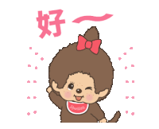

This is your future and forever loving nerdy bf/huband, Sean 😙😎
Happy National GF's day my love!
To be honest, I dont even know where to start, because theres just so much to talk about. you went from being such a great person in my life to becoming the most important part of it.
Its actually kind of funny, when we were still just friends catching up every now and then, we'd both talk about how hard love was. How we couldn't seem to find it. And the whole time, it was right in front of us. I love how we started as friends, how we went from "I care about you more" to "I miss you more" to now "I love you more."
Every text, every movie night, every “I miss you more” argument, Every late night call where we talk until we forget the time and fall asleep. Nothing about us ever felt forced to me.
Thank you for all of it, Maemae. Thank you for the late nights you stayed on call even when you were tired. Thank you for always doing questions and the random conversations that somehow turned into the most meaningful ones. But really, thank you for showing me what it looks like when someone actually cares, not in a perfect way, but in a real way. I promise to be extra gentle with your heart. Always.
I know I may not be the first person to make you laugh, or the first person to stay up late talking about life issues, and we may not be each others first love either. But honestly, I could care less about being the first, because id rather be the last, the one who stays.
I want to be the person who never falls out of love because of a small fight, a misunderstanding, or because things get hard. Whether its dry moments or miscommunication, my heart still picks you, because it doesnt know how to stop loving you.
And not everyday will be a good day. But you help me find something good in even the rough ones. Thats something I truly admire. The world feels brighter and warmer because you're in it.
I admire how hard you try. You mentioned once that you can be avoidant sometimes, but even then, you still show up. not just for me, for each other, but most importantly, for you. Even when you send a dry text, don't text me for hours while i get worried, or even when you feel overwhelmed and head straight to bed without saying goodnight, you still find a way to make things work. Thats not small. Thats one of the purest and rarest values a beautiful women such as yourself holds Maegan.
Im forever proud of your efforts, not just your results.
And please dont be scared that i'm going to leave. I know thats been a fear for us, and I understand. But I want you to know, i am not them. Im not here to love bomb and disappear. You dont have to second guess my intentions, and you dont have to earn my love by being perfect. I love every part of you. You've always been willing to wait, and you told me that, especially if its with the right one. I'm glad I am that one.
You can always, always bother me. You are never a burden or annoying, and you are most definitely never too much. No matter whats on your mind, My door is always open for you, Maemae. Always 💗
I can't wait to listen to Bruno Mars and Yel with you on random weekdays
I can't wait to be part of your family movie night.
I can't wait to have pink drink dates with you just because.
I can't wait to go to Brandy Melville with you and spend all of my money
I can't wait for your coconut mango shampoo to be the first thing I notice when I hug you.
I can't wait for the distance between us to shorten.
but I mostly can't wait to be someone you and your family is proud to know.
I know I may not be your official boyfriend today, but that doesn't stop me from feeling incredibly grateful that I get to care for someone as wonderful as you. Being able to make you smile is already a gift to me. What matters most to me is continuing to grow with you, learn with you, and continuing to show up, choosing each other the same way we always have been.
one day, when the distance is shorter, when timing is kinder to us, I will ask you that special question 👀
But until then, as I continue to give my love to you and to us,
I hope you also continue to give that same love back to yourself.
I hope you see the women I see everyday: someone who is smart, warm,
funny, and so incredible worth loving.
you deserve to see your own worth the way i see it, and Ill spend as long as
it takes reminding you of it, until you fully believe it.
I LOVEEE AND MISSSS UUU THE MOST!
Your future and love,
In case you still think you love me more...
😙👉🏼 Click here